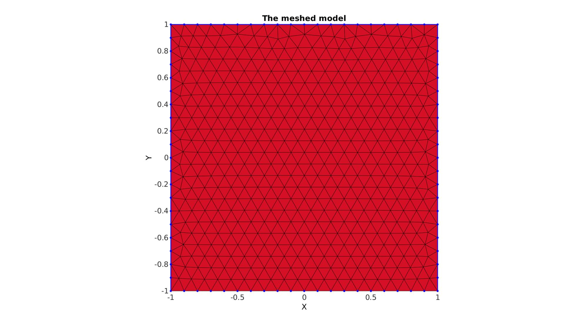
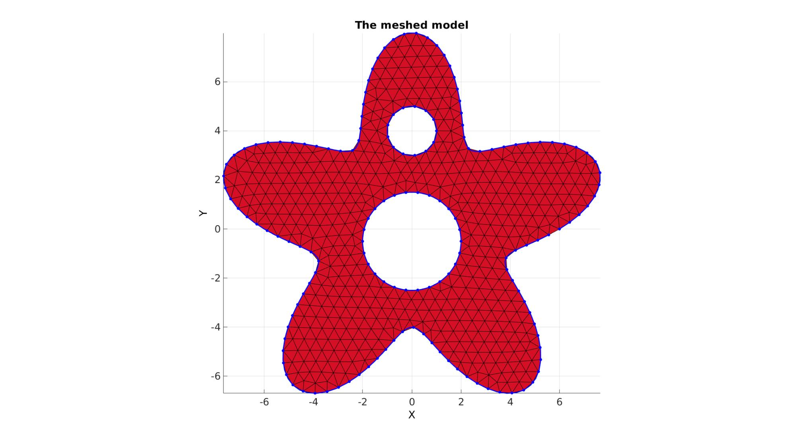
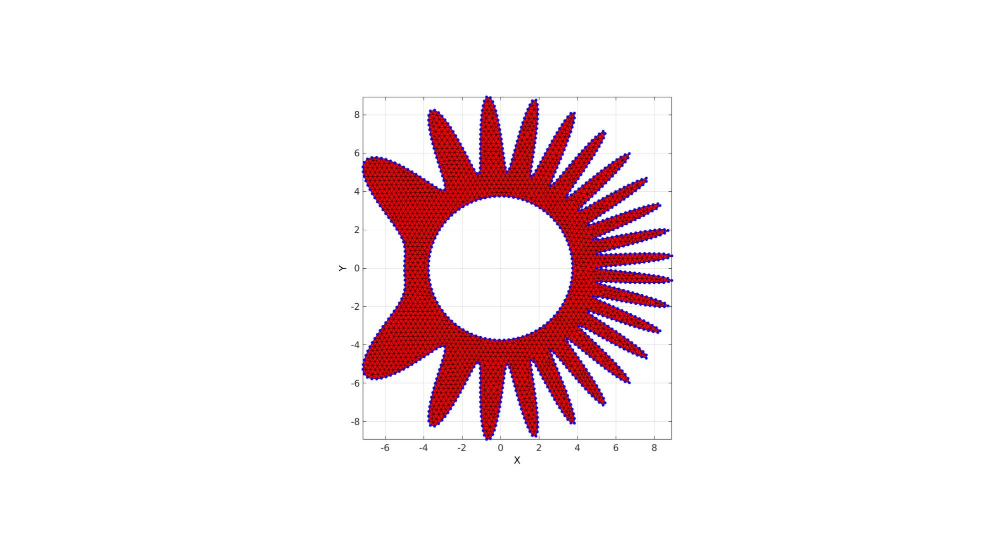
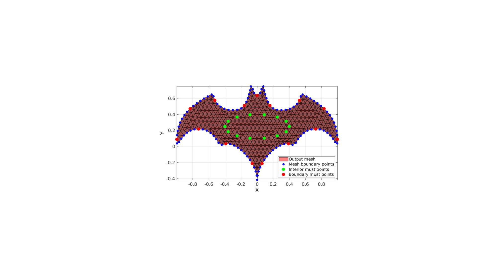
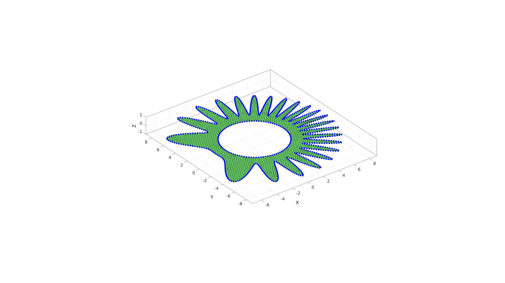
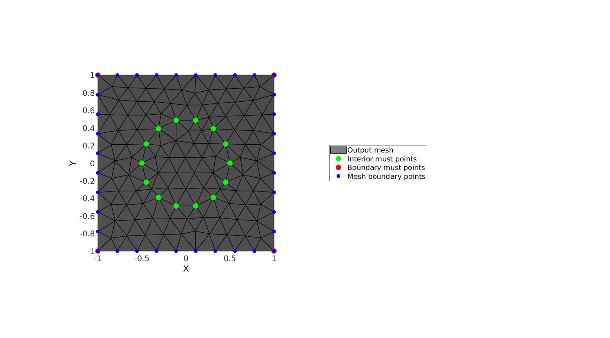
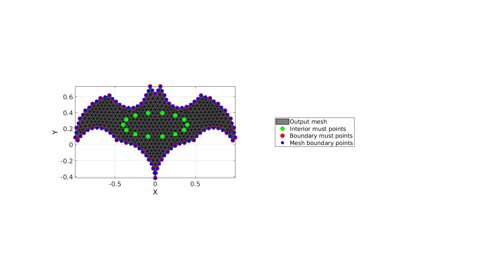
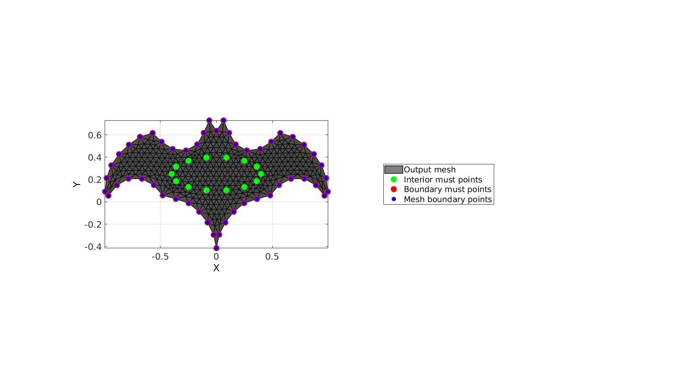

regionTriMesh2D
Below is a demonstration of the features of the meshDistMarch function
Contents
- Syntax
- Description
- Examples
- Meshing a 2D region defined by a single boundary curve
- Meshing regions containing holes
- Using input structure instead
- Using must points in the interior and/or boundary, example 1
- Using must points in the interior and/or boundary, example 2
- Using must points in the interior and/or boundary, example 3
- Using must points in the interior and/or boundary, example 4
Syntax
[F,V]=regionTriMesh2D(regionCell,pointSpacing,resampleCurveOpt,plotOn); [F,V,boundaryInd,indMustPointsInner]=regionTriMesh2D(inputStructure);
Description
This function creates a 2D triangulation for the region specified in the variable regionCell. The mesh aims to obtain a point spacing as defined by the input pointSpacing. The function output contains the triangular faces in F, the vertices in V and the per triangle region indices in regionInd. By setting plotOn to 0 or 1 plotting can be switched on or off.
More on the specification of the region: The input variable regionCell is a cell array containing all the boundary curves, e.g. for a two curve region 1 we would have something like regionSpec{1}={V1,V2} where V1 and V2 are the boundary curves. Multiple curves may be given here. The first curve should form the outer boundary of the entire region, the curves that follow should define holes inside this boundary and the space inside them is therefore not meshed.
Examples
clear; close all; clc;
Meshing a 2D region defined by a single boundary curve
Creating boundary curves
V1=[-1 -1; -1 1; 1 1; 1 -1];
Meshing the region
% The input variable regionCell is a cell array containing all the boundary % curves, e.g. for a two curve region 1 we would have something like % regionSpec{1}={V1,V2} where V1 and V2 are the boundary curves. Multiple % curves may be given here. The first curve should form the outer boundary % of the entire region, the curves that follow should define holes inside % this boundary and the space inside them is therefore not meshed. %Defining a region regionCell={V1}; %A region between V1 and V2 (V2 forms a hole inside V1) plotOn=1; %This turns on/off plotting pointSpacing=0.1; %Desired point spacing resampleCurveOpt=1; %Option to turn on/off resampling of input boundary curves [F,V]=regionTriMesh2D(regionCell,pointSpacing,resampleCurveOpt,plotOn); plotV(V1,'b-','LineWidth',2); axis tight; drawnow;
Meshing regions containing holes
Creating boundary curves
%Boundary 1 ns=150; t=linspace(0,2*pi,ns+1); t=t(1:end-1); r=6+2.*sin(5*t); [x,y] = pol2cart(t,r); V1=[x(:) y(:)]; %Boundary 2 [x,y] = pol2cart(t,ones(size(t))); V2=[x(:) y(:)+4]; %Boundary 3 [x,y] = pol2cart(t,2*ones(size(t))); V3=[x(:) y(:)-0.5];
Meshing the region
% The input variable regionCell is a cell array containing all the boundary % curves, e.g. for a two curve region 1 we would have something like % regionSpec{1}={V1,V2} where V1 and V2 are the boundary curves. Multiple % curves may be given here. The first curve should form the outer boundary % of the entire region, the curves that follow should define holes inside % this boundary and the space inside them is therefore not meshed. %Defining a region regionCell={V1,V2,V3}; %A region between V1 and V2 (V2 forms a hole inside V1) plotOn=1; %This turns on/off plotting pointSpacing=0.5; %Desired point spacing resampleCurveOpt=1; %Option to turn on/off resampling of input boundary curves [F,V]=regionTriMesh2D(regionCell,pointSpacing,resampleCurveOpt,plotOn); plotV(V1,'b-','LineWidth',2); plotV(V2,'b-','LineWidth',2); plotV(V3,'b-','LineWidth',2); axisGeom; view(2); drawnow; 
Using input structure instead
Creating boundary curves
%Boundary 1 ns=500; t=linspace(0,2*pi,ns+1); t=t(1:end-1); r=5; a=2; R=r-(a.*cos(7*(t-pi).^2)-a); [x,y] = pol2cart(t,R); V1=[x(:) y(:)]; %Boundary 2 [x,y] = pol2cart(t,(0.75*r)*ones(size(t))); V2=[x(:) y(:)];
Meshing the region
%Defining input structure
inputStructure.regionCell={V1,V2};
inputStructure.pointSpacing=0.25;
inputStructure.resampleCurveOpt=1;
inputStructure.plotOn=0;
[F,V,boundaryInd]=regionTriMesh2D(inputStructure);
cFigure; hold on; gpatch(F,V,'r'); plotV(V(boundaryInd,:),'b.','markerSize',15); axisGeom; view(2); drawnow;
Using must points in the interior and/or boundary, example 1
% Create example boundary curve V=batman(150); % Create example interior points t=linspace(0,2*pi,15)'; t=t(1:end-1); Vm=[0.4*cos(t) 0.15*sin(t)+0.25]; inputStructure.regionCell={V}; inputStructure.pointSpacing=0.05; inputStructure.resampleCurveOpt=1; inputStructure.plotOn=0; inputStructure.mustPointsInner=Vm; inputStructure.mustPointsBoundary=V(1:10:end,:); inputStructure.smoothIterations=250; [F,V,boundaryInd,indMustPointsInner,indMustPointsBoundary]=regionTriMesh2D(inputStructure);
cFigure; hold on; hp(1)=gpatch(F,V,'kw','k',1,1); hp(2)=plotV(V(indMustPointsInner,:),'g.','markerSize',35); hp(3)=plotV(V(indMustPointsBoundary,:),'r.','markerSize',35); hp(4)=plotV(V(boundaryInd,:),'b.','markerSize',25); legend(hp,{'Output mesh','Interior must points','Boundary must points','Mesh boundary points'},'Location','EastOutSide'); axisGeom; camlight headlight; view(2) drawnow;
Using must points in the interior and/or boundary, example 2
% Creating boundary curves V1=[-1 -1; -1 1; 1 1; 1 -1]; % Create example interior points t=linspace(0,2*pi,15)'; t=t(1:end-1); Vm=[0.5*cos(t) 0.5*sin(t);]; % Meshing the region %Defining a region regionCell={V1}; %A region between V1 and V2 (V2 forms a hole inside V1) plotOn=1; %This turns on/off plotting pointSpacing=0.1; %Desired point spacing resampleCurveOpt=1; %Option to turn on/off resampling of input boundary curves inputStructure.regionCell=regionCell; inputStructure.pointSpacing=0.2; inputStructure.resampleCurveOpt=1; inputStructure.plotOn=0; inputStructure.mustPointsInner=Vm; inputStructure.mustPointsBoundary=V1; inputStructure.smoothIterations=250; [F,V,boundaryInd,indMustPointsInner,indMustPointsBoundary]=regionTriMesh2D(inputStructure);
cFigure; hold on; hp(1)=gpatch(F,V,'kw','k',1,1); hp(2)=plotV(V(indMustPointsInner,:),'g.','markerSize',35); hp(3)=plotV(V(indMustPointsBoundary,:),'r.','markerSize',35); hp(4)=plotV(V(boundaryInd,:),'b.','markerSize',25); legend(hp,{'Output mesh','Interior must points','Boundary must points','Mesh boundary points'},'Location','EastOutSide'); axisGeom; camlight headlight; view(2) drawnow;
Using must points in the interior and/or boundary, example 3
This example features must points on all boundary points and curve resampling
% Create example boundary curve V1=batman(50); % Create example interior points t=linspace(0,2*pi,15)'; t=t(1:end-1); Vm=[0.4*cos(t) 0.15*sin(t)+0.25]; inputStructure.regionCell={V1}; inputStructure.pointSpacing=0.05; inputStructure.resampleCurveOpt=1; %Turn on/off curve resampling inputStructure.plotOn=0; inputStructure.mustPointsInner=Vm; inputStructure.mustPointsBoundary=V1; %Hold on to all boundary points inputStructure.smoothIterations=250; [F,V,boundaryInd,indMustPointsInner,indMustPointsBoundary]=regionTriMesh2D(inputStructure);
cFigure; hold on; hp(1)=gpatch(F,V,'kw','k',1,1); hp(2)=plotV(V(indMustPointsInner,:),'g.','markerSize',35); hp(3)=plotV(V(indMustPointsBoundary,:),'r.','markerSize',35); hp(4)=plotV(V(boundaryInd,:),'b.','markerSize',25); legend(hp,{'Output mesh','Interior must points','Boundary must points','Mesh boundary points'},'Location','EastOutSide'); axisGeom; camlight headlight; view(2) drawnow;
Using must points in the interior and/or boundary, example 4
This example features must points on all boundary points and no curve resampling
% Create example boundary curve V1=batman(50); % Create example interior points t=linspace(0,2*pi,15)'; t=t(1:end-1); Vm=[0.4*cos(t) 0.15*sin(t)+0.25]; inputStructure.regionCell={V1}; inputStructure.pointSpacing=0.05; inputStructure.resampleCurveOpt=0; %Turn on/off curve resampling inputStructure.plotOn=0; inputStructure.mustPointsInner=Vm; inputStructure.mustPointsBoundary=V1; %Hold on to all boundary points inputStructure.smoothIterations=250; [F,V,boundaryInd,indMustPointsInner,indMustPointsBoundary]=regionTriMesh2D(inputStructure);
cFigure; hold on; hp(1)=gpatch(F,V,'kw','k',1,1); hp(2)=plotV(V(indMustPointsInner,:),'g.','markerSize',35); hp(3)=plotV(V(indMustPointsBoundary,:),'r.','markerSize',35); hp(4)=plotV(V(boundaryInd,:),'b.','markerSize',25); legend(hp,{'Output mesh','Interior must points','Boundary must points','Mesh boundary points'},'Location','EastOutSide'); axisGeom; camlight headlight; view(2) drawnow;

GIBBON www.gibboncode.org
Kevin Mattheus Moerman, gibbon.toolbox@gmail.com
GIBBON footer text
License: https://github.com/gibbonCode/GIBBON/blob/master/LICENSE
GIBBON: The Geometry and Image-based Bioengineering add-On. A toolbox for image segmentation, image-based modeling, meshing, and finite element analysis.
Copyright (C) 2019 Kevin Mattheus Moerman
This program is free software: you can redistribute it and/or modify it under the terms of the GNU General Public License as published by the Free Software Foundation, either version 3 of the License, or (at your option) any later version.
This program is distributed in the hope that it will be useful, but WITHOUT ANY WARRANTY; without even the implied warranty of MERCHANTABILITY or FITNESS FOR A PARTICULAR PURPOSE. See the GNU General Public License for more details.
You should have received a copy of the GNU General Public License along with this program. If not, see http://www.gnu.org/licenses/.
GIBBON footer text
License: https://github.com/gibbonCode/GIBBON/blob/master/LICENSE
GIBBON: The Geometry and Image-based Bioengineering add-On. A toolbox for image segmentation, image-based modeling, meshing, and finite element analysis.
Copyright (C) 2006-2020 Kevin Mattheus Moerman
This program is free software: you can redistribute it and/or modify it under the terms of the GNU General Public License as published by the Free Software Foundation, either version 3 of the License, or (at your option) any later version.
This program is distributed in the hope that it will be useful, but WITHOUT ANY WARRANTY; without even the implied warranty of MERCHANTABILITY or FITNESS FOR A PARTICULAR PURPOSE. See the GNU General Public License for more details.
You should have received a copy of the GNU General Public License along with this program. If not, see http://www.gnu.org/licenses/.